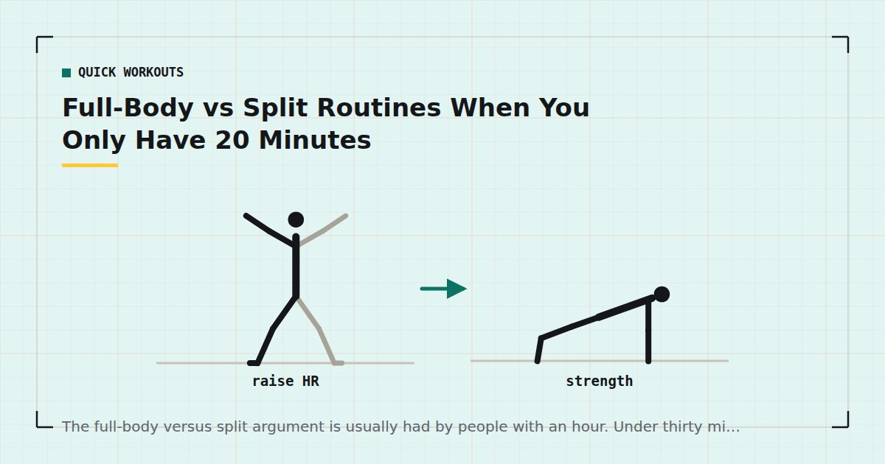

Quick Workouts & Plans
Full-Body vs Split Routines When You Only Have 20 Minutes
The full-body versus split argument is usually had by people with an hour. Under thirty minutes the maths changes, and the answer becomes much less ambiguous.

Ask whether full-body or split training is better and you will get a confident answer either way. Both are usually defensible, because the question is under-specified. Better for whom, over how many days, in sessions of what length?
Constrain the session to twenty minutes and most of the ambiguity disappears. This is why.
What the argument is actually about
Underneath the terminology, there is one real variable: how often each muscle group gets trained per week, and how much work it receives when it does.
A full-body session trains everything a little each time. A split trains part of you a lot, less often. Given the same number of weekly sessions, a split concentrates volume and reduces frequency; full body does the reverse.
The evidence on which is better is less dramatic than the internet suggests. A meta-analysis found that when weekly volume is held equal, higher training frequency produces similar or slightly better hypertrophy.1 A slight edge to frequency, not a decisive one — which means for someone with unlimited time, either structure works and personal preference reasonably decides it.
The interesting case is when time is not unlimited.
The maths of a short session
Here is the constraint that drives everything. A twenty-minute session, after a short warm-up, gives you roughly fifteen minutes of working time. At sixty to ninety seconds per set including rest, that is about ten to twelve hard sets total.
Now consider what happens to those twelve sets under each structure, training three times a week.
Full body: twelve sets spread across roughly five movement patterns means two to three sets per pattern per session. Across three sessions, each muscle group receives six to nine hard sets a week, spread over three exposures.
A three-way split: twelve sets concentrated on one area. Legs get twelve sets in one session, then nothing for seven days. Across the week, each muscle group receives twelve sets over a single exposure.
The weekly volumes are broadly comparable. The frequency is not: three exposures versus one. And there is a second problem with the concentrated version that the numbers hide.
Sets performed late in a session on an already-fatigued muscle group contribute less than fresh ones. Twelve consecutive sets of leg work are not twelve equally valuable sets — the last four are performed by a muscle that has been working for fifteen minutes. Spreading the same twelve sets across three days means every one of them is done relatively fresh.
The case for full body
Higher frequency for the same time. The main advantage, and it aligns with the direction the evidence points.
Every session is complete. If you manage two sessions instead of three this week, you still trained everything twice. On a three-way split, missing one session means an entire region got nothing. This robustness matters far more for home training than it does for someone with a reliable gym routine, and it is the reason the three-day split is built full-body.
Better use of compound movements. With limited sets, you want each one covering as much muscle as possible. Squats, push-ups and rows in the same session is an efficient use of twelve sets. Twelve sets of leg variations is not.
Less warm-up overhead. A split session still needs its warm-up, so shorter sessions lose a proportionally larger share of their time to it. Three full-body sessions and three split sessions cost the same warm-up time, but the full-body version gets more coverage for it.
The case for a split
It is not zero, and it is worth stating fairly.
Focus and enjoyment. Some people train more consistently when each session has a clear identity. Consistency beats structural optimisation, so if a split is what gets you training four times a week instead of twice, it is the better plan for you regardless of what the meta-analyses say.
It scales better with more days. At five or six sessions a week, a split becomes the sensible structure because full-body training that often is difficult to recover from. This is where push/pull/legs earns its popularity.
Specific weak points. If one area is genuinely lagging, dedicating a short session to it is a reasonable way to add volume there without lengthening everything else.
At twenty minutes, a split is not training a body part properly. It is training a body part briefly and then ignoring it for a week.
The answer, by weekly frequency
| Sessions/week | Use | Each muscle trained |
|---|---|---|
| 2 | Full body | Twice |
| 3 | Full body | Three times |
| 4 | Upper / lower | Twice |
| 5–6 | Push / pull / legs | Twice |
The rule underneath the table: pick whichever structure gets each muscle group trained about twice a week given the days you actually have. Below four short sessions a week, only full-body training achieves that. At four, upper/lower achieves it with shorter sessions. Above four, a three-way split does.
Since most people training at home manage two to three sessions a week, the practical answer for most readers of this site is full body. That is not a philosophical position; it falls out of the session count.
What this looks like in practice
A twenty-minute full-body session that uses its twelve sets well contains one movement from each of the main patterns and nothing else:
- A squat pattern — three sets
- A push — three sets
- A pull — three sets
- A hinge or glute movement — two sets
- A core brace — two sets
That is thirteen sets, which is about right for twenty minutes if you pair non-competing exercises to cut the dead time. It is the structure behind the 15-minute full-body workout, and the reasoning for the ordering is in how to structure a home workout.
What it should not contain is three chest exercises. With twelve sets available, spending nine of them on one muscle group is the split problem in miniature, whatever you call the session.
Where to go next
If you have settled on full body, the three-day split is the plan. If you are trying to work out how many days you can realistically commit to, how many days a week should you work out is the more useful question to answer first.
Frequently asked questions
Is full body or a split better for short workouts?
Full body, for almost anyone training four or fewer times a week. A twenty-minute session yields roughly twelve hard sets; concentrating those on one muscle group means it is trained once a week, while spreading them full-body means everything is trained at every session.
How many sets can you fit in a 20-minute workout?
About ten to twelve, after a short warm-up, at sixty to ninety seconds per set including rest. Pairing exercises that do not compete for the same muscles lets you fit a few more without shortening actual recovery.
Is a bro split bad for home training?
It is a poor fit rather than inherently bad. Training one muscle group per session requires five or six sessions a week to cover the body at reasonable frequency, which is more days than most people training at home can sustain.
Does training frequency actually matter for muscle growth?
Somewhat. Meta-analytic evidence suggests that when weekly volume is equated, higher frequency produces similar or slightly better hypertrophy. The effect is real but modest — which is why weekly volume and effort matter more than which split you choose.
Can I do a split if I only train 3 days a week?
You can, and it will still produce results, but each muscle group will be trained once a week. A full-body structure over the same three days trains everything three times for the same total time.
Sources and further reading
- Schoenfeld BJ, Ogborn D, Krieger JW. “Effects of Resistance Training Frequency on Measures of Muscle Hypertrophy: A Systematic Review and Meta-Analysis.” Sports Medicine, 2016;46(11):1689–1697. PubMed.
- Schoenfeld BJ, Ogborn D, Krieger JW. “Dose-response relationship between weekly resistance training volume and increases in muscle mass: A systematic review and meta-analysis.” Journal of Sports Sciences, 2017;35(11):1073–1082. PubMed.
- Currier BS, Mcleod JC, Banfield L, et al. “Resistance training prescription for muscle strength and hypertrophy in healthy adults: a systematic review and Bayesian network meta-analysis.” British Journal of Sports Medicine, 2023. PubMed.
- NHS. Strength and Flex exercise plan.
Comments
Comments are not enabled yet. Add a hosted comment embed (Disqus, Commento, Giscus) inside this container when you are ready.